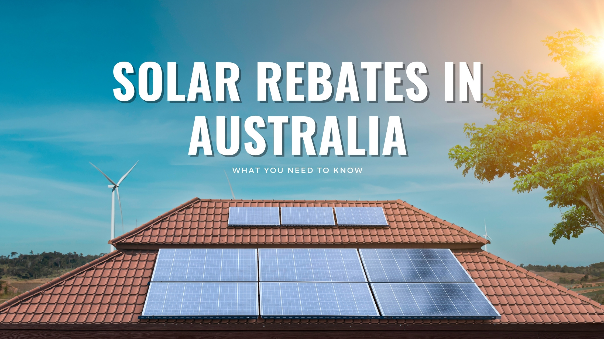

A Guide to Solar Rebates
Government-backed solar rebates aim to make solar energy more accessible and cost-effective for homeowners. These incentives can take the form of tax credits, financial subsidies, or performance-based rewards.
The Australian Government’s primary objective is to encourage widespread adoption of solar energy, leading to lower electricity bills, environmental benefits, and reduced reliance on fossil fuels.
Homeowners are eligible for solar rebates, while commercial property owners can apply for rebates on business premises.
Understanding Small-Scale Technology Certificates (STCs)

E-Smart Solar assists clients in navigating Australia’s Small-Scale Technology Certificates (STCs) program. Though this scheme is being gradually phased out, it continues to support small-scale rooftop solar installations.
The number of STCs awarded is influenced by location, system capacity, and the remaining years of the scheme. E-Smart Solar advises homeowners to take advantage of these rebates before the scheme concludes in 2030.
The Clean Energy Regulator administers the STC program, and rebate amounts vary based on solar exposure. A larger rebate is granted to areas with higher sun exposure. For instance, an 8kW solar system in Melbourne or Hobart receives a smaller rebate compared to the same system in Penrith, the Blue Mountains, or the Hawkesbury region.
While Victoria offers additional state-based incentives and interest-free loans, New South Wales has not introduced such programs. However, given NSW’s greater solar exposure, solar systems in the state tend to yield a quicker return on investment than those in Victoria.
Tax Incentives for Small Businesses
E-Smart Solar specializes not only in solar installation but also in helping small businesses understand how to leverage the Australian Government’s 100% tax deduction for solar and battery system purchases.
This initiative provides businesses with an opportunity to embrace renewable energy while benefiting financially.
How E-Smart Solar Can Help You Claim Your Rebate
Although solar rebates offer significant financial savings, eligibility depends on meeting specific criteria.
E-Smart Solar simplifies the process, ensuring homeowners meet rebate conditions and successfully claim their incentives.
Key eligibility factors include:
- Certified Solar Panels: To qualify, the chosen panels must be on the approved product list.
- Accredited Installation: E-Smart Solar strongly recommends hiring SAA-certified installers to guarantee a high-quality, compliant installation.
- Timely Applications: Homeowners should claim their rebate within a year of installation. E-Smart Solar streamlines the process to ensure timely and accurate submissions.
Feed-in Tariffs and Ongoing Savings
Feed-in tariffs, while separate from government rebates, provide additional financial benefits by rewarding homeowners for surplus solar energy fed back into the grid.
- Homeowner Earnings: Energy providers compensate households for excess electricity generated by their solar systems.
- Variable Rates: Rates differ between states and electricity retailers and may change over time. E-Smart Solar can recommend providers offering the most competitive tariffs.
- Financial Impact: Though rates have decreased in recent years, feed-in tariffs still contribute to a faster return on investment by offsetting system costs.
Long-Term Financial Benefits
While solar system installation requires an upfront investment, high-quality E-Smart solar and battery systems provide significant long-term savings through reduced electricity bills.
Over time, solar owners can save tens of thousands of dollars, benefiting from government incentives, feed-in tariffs, and free solar-generated power.
E-Smart Solar partners with homeowners to maximize financial benefits while seamlessly transitioning to renewable energy.
As accredited solar installers, we ensure our clients fully understand the small-scale renewable energy rebate system. While misleading claims may suggest free solar systems, rebates genuinely reduce installation costs, making solar more affordable.